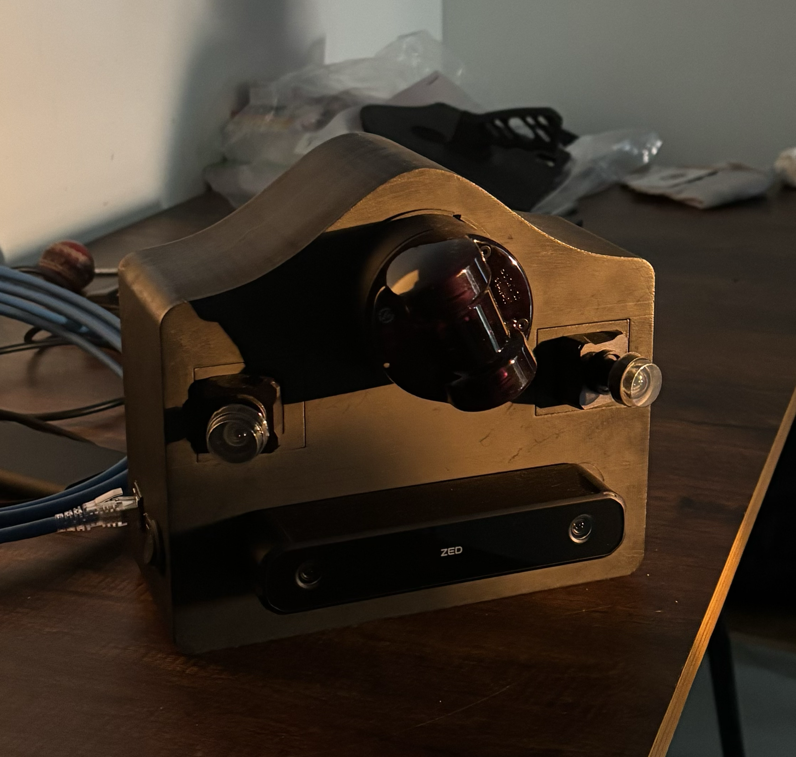
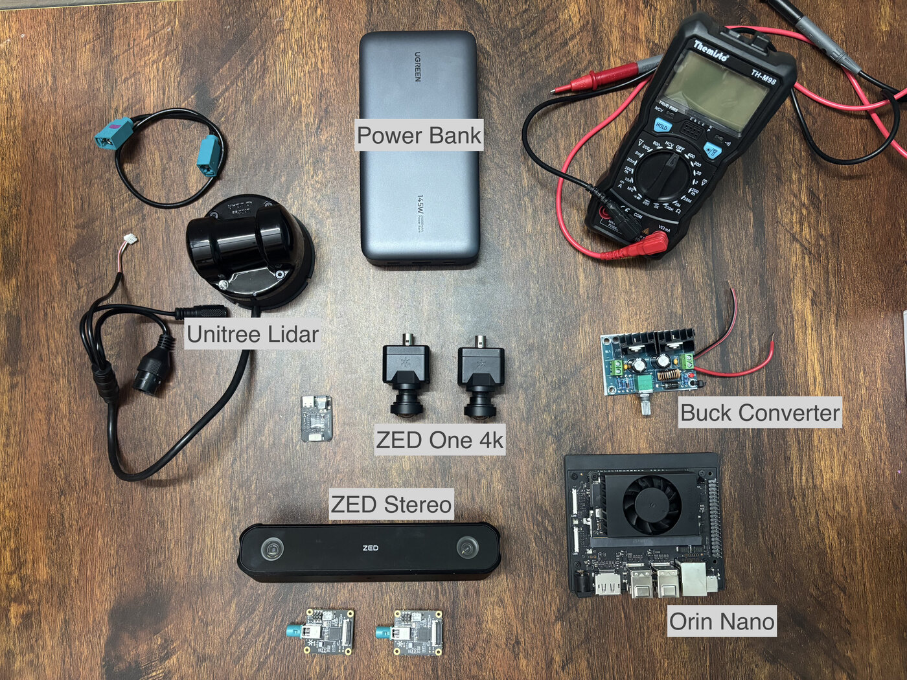
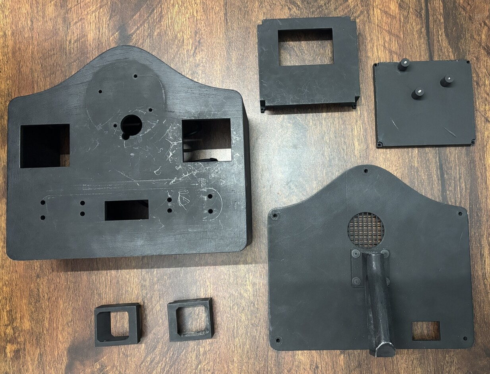
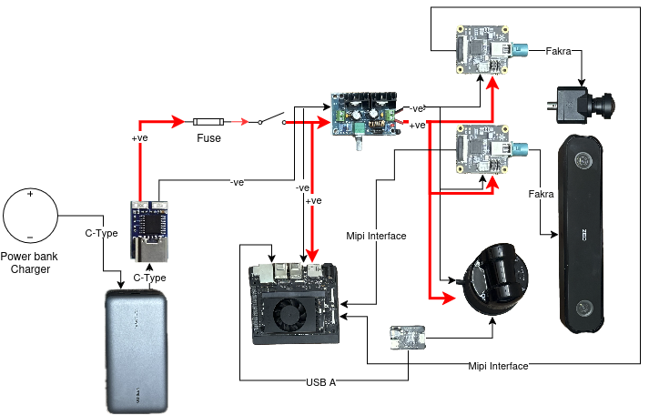

Training and validating robotic systems in the real world is expensive, time-consuming, and difficult to scale. Collecting enough data to capture the diversity of real-world environments, objects, lighting conditions, sensor configurations, and edge cases is a significant challenge. More importantly, a system that performs well in one environment does not necessarily generalize to another. Differences in the environment, sensor setup, appearance, and operating conditions can significantly affect the performance of a perception system. Simulation provides a promising way to address this problem. In a simulated environment, we can generate large amounts of data at a much lower cost, control the environment, reproduce scenarios deterministically, and expose the robot to a much wider range of conditions. We can also deliberately introduce variations in objects, poses, lighting, textures, and other environmental parameters to improve the robustness of the trained models.
Introducing BlackBox

BlackBox is sensor Handheld device consist of Unitree Lidar L2, ZedX 4k Cameras, ZedX Stereo Camera. The idea is simple: capture the real world first, then use that data as the foundation for building a digital representation of the environment. Instead of manually creating a virtual environment from scratch, Blackbox allows us to scan an existing environment and capture the information required to reconstruct it digitally. The LiDAR provides the geometric structure of the environment, while the cameras provide the visual information needed to reproduce its appearance.
Design
Portability and onboard computation were two of the primary hardware requirements. The device needed to be capable of mapping large environments without relying on external power or computing resources. I integrated a power bank for portable operation and an NVIDIA Jetson Orin Nano for onboard data processing and map generation.
Since Blackbox was intended primarily as an experimentation platform, I designed the system with multiple cameras: two ZED One 4K cameras and one ZED X stereo camera, alongside the Unitree LiDAR L2. This provided a flexible sensor setup for experimenting with different perception, reconstruction, and sensor-fusion approaches.
Hardware Components

| Component | USD | INR (approx.) | Link |
|---|---|---|---|
| Unitree 4D LiDAR L2 | — | ₹69,219 | Robu |
| ZED X One 4K (×2) | $998 | ₹83,832 | Stereolabs |
| ZED X Stereo Camera | $599 | ₹50,316 | Stereolabs |
| ZED Link Capture Card Mono | $139 | ₹11,676 | Stereolabs |
| NVIDIA Jetson Orin Nano Super Developer Kit | $249 | ₹20,916 | NVIDIA |
| GMSL2 Fakra Cables (×3, 0.3 m) | $45 | ₹3,780 | Stereolabs |
| Power bank | — | ~₹4,000 | Amazon |
| Buck Converter | — | ~₹800 | Amazon |
| PD Decoy | — | ~₹1,200 | Amazon Amazon |
| Miscellaneous | — | ₹2,530 | Fuse kit Wire connectors Silicone wire M3 screws Rocker switch RJ45 coupler USB-C extension |
| Total (approx.) | $2,030 | ₹2,48,269 |
Import items converted at ₹84/USD. Local Amazon/Robu prices may vary with availability and shipping.
Mechanical Design

The full mechanical design was modeled in Blender before printing.

The Enclosure is 3D-printed, with a Jetson mount inside the enclosure. The cameras use two interchangeable holders: one aligned at 0° with the LiDAR, and another pitched 30° outward for a wider field of view. The design is compatible with ZED X, ZED 2i, RealSense D435f, and RealSense D435i cameras. Small mounts hold the Ethernet coupler and charging port. A rear fan vent keeps air moving through the enclosure. A handle on the back panel makes it easy to carry, and an ON/OFF switch controls power.
Electronics
